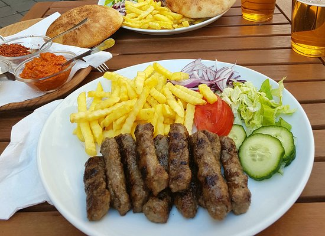

Cevapi

Description
Cevapi (pronounced CHAE-vap or CHAE-vap-ee) is easy to make,
grilled sausages from Southeastern Europe that burst with smoky flavor and
are perfect for serving with flatbread and sliced onions.
Cevapi are hand-shaped, case-less sausages that are popular in Croatia, Serbia, Bosnia-Herzegovina, Bulgaria,
and other countries in the Balkans/Southeastern Europe region.
Ingredients
- 1 lb ground beef, 85% lean
- ½ lb ground pork
- 3 garlic cloves, minced
- 1 ¼ tsp salt
- 1 tsp ground black pepper
- 1 tsp paprika
- ¾ tsp baking soda
Steps
- In a large bowl mix together all ingredients.
- Using slightly over 1 Tbsp of meat mixture per sausage,
shape the mixture into sausages the size and shape of a fat finger
(roughly 3 inches long and ¾ of an inch in diameter).
- Place all the formed sausages in a single layer on a platter.
Cover the platter and refrigerate for at least 1 hour (up to overnight).
- When you are ready to cook your sausages, preheat your grill to medium heat, 350-400⁰F.
(You should be able to hold your hand a few inches from the cooking grate for 5-7 seconds.)
- Grill the sausages using a fine grate grill pan for 4-5 minutes a side, until golden and springy.
- Serve the cevapi with sliced sweet onions and flatbread (like lepinja or pita).
Go back